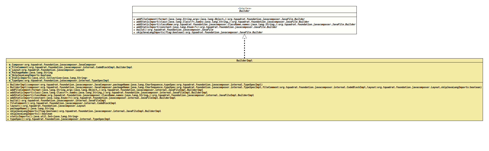

Interface JavaFile.Builder
- All Known Implementing Classes:
JavaFileImpl.BuilderImpl
- Enclosing interface:
- JavaFile
@ClassVersion(sourceVersion="$Id: JavaFile.java 854 2021-01-20 22:44:45Z tquadrat $")
@API(status=STABLE,
since="0.0.5")
public static sealed interface JavaFile.Builder
permits JavaFileImpl.BuilderImpl
The definition for a builder for an instance of an implementation of
JavaFile.- Author:
- Square,Inc.
- Modified by:
- Thomas Thrien (thomas.thrien@tquadrat.org)
- Version:
- $Id: JavaFile.java 854 2021-01-20 22:44:45Z tquadrat $
- Since:
- 0.0.5
- UML Diagram
-

UML Diagram for "org.tquadrat.foundation.javacomposer.JavaFile.Builder"
{kind=link}
-
Method Summary
Modifier and TypeMethodDescriptionaddFileComment(String format, Object... args) Adds text to the file comment.addStaticImport(Class<?> clazz, String... names) Adds a static import.addStaticImport(Enum<?> constant) Adds a static import for the givenenumvalue.addStaticImport(ClassName className, String... names) Adds a static import.build()Builds an instance ofJavaFilefrom this builder.Deprecated, for removal: This API element is subject to removal in a future version.The indentation is determined by the layout only; it cannot be overwritten.Deprecated, for removal: This API element is subject to removal in a future version.Got obsolete with the use ofJavaComposeras the factory.skipJavaLangImports(boolean flag)
-
Method Details
-
addFileComment
Adds text to the file comment.- Parameters:
format- The format.args- The arguments.- Returns:
- This
Builderinstance.
-
addStaticImport
Adds a static import.- Parameters:
clazz- The class.names- The names of the elements from the given class that are to be imported.- Returns:
- This
Builderinstance.
-
addStaticImport
Adds a static import.- Parameters:
className- The class.names- The names of the elements from the given class that are to be imported.- Returns:
- This
Builderinstance.
-
addStaticImport
Adds a static import for the givenenumvalue.- Parameters:
constant- Theenumvalue.- Returns:
- This
Builderinstance.
-
build
Builds an instance ofJavaFilefrom this builder.- Returns:
- The
JavaFileinstance.
-
indent
Deprecated, for removal: This API element is subject to removal in a future version.The indentation is determined by the layout only; it cannot be overwritten. This implementation of this method does nothing.Sets the indentation value.- Parameters:
indent- The indentation.- Returns:
- This
Builderinstance.
-
layout
Deprecated, for removal: This API element is subject to removal in a future version.Got obsolete with the use ofJavaComposeras the factory.Sets the layout for theJavaFile.- Parameters:
layout- The layout.- Returns:
- This
Builderinstance.
-
skipJavaLangImports
Call this to omit imports for classes from the package
java.lang, such asStringorMath.By default, JavaComposer explicitly imports types in
java.langto defend against naming conflicts. Suppose an (ill-advised) class is namedcom.example.String. Whenjava.langimports are skipped, generated code incom.examplethat referencesjava.lang.Stringwill getcom.example.Stringinstead.- Parameters:
flag-truemeans that the imports for classes from the packagejava.langare skipped,falsemeans that the imports are added explicitly.- Returns:
- This
Builderinstance.
-